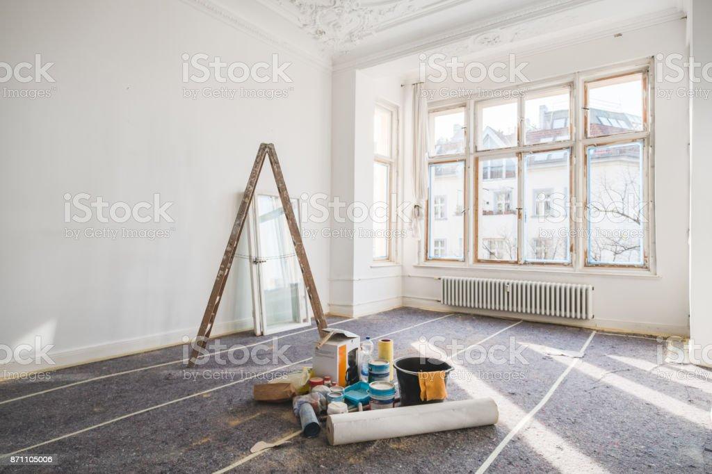

NADZÓR AUTORSKI
Dla osób, które oczekują wygody i pełnej kontroli procesu przebiegu remontu przez architekta wnętrz.
Otrzymujesz:
- Omówienie projektu z ekipą wykonawczą i stolarzem.
- Regularne wizyty na budowie raz lub w razie potrzeby dwa razy w tygodniu w celu kontroli zgodności prac z projektem wnętrza.
- Kontakt telefoniczny z ekipę remontową.
- Modyfikacja rozwiązań projektowych w przypadku nieprzewidzianych barier technicznych lub braku materiałów na stanie.
- Weryfikacja kolorów materiałów na budowie (m.in. finalny dobór odcieni farb, podłóg na podstawie próbek na miejscu na budowie).
- Obecność podczas montowania mebli na wymiar.
- Finalna stylizacja wnętrza dodatkami i tekstyliami.
Cena:
- Ustalana indywidualnie: 30-50% wartości projektu kompleksowego.
- Lub dowolna ilość pojedyńczych wizyt na budowie, cena za wizytę: 300-700zł
Etapy współpracy:
9. Nadzór autorski prac remontowych

Podczas nadzoru autorskiego opiekuję się przebiegiem remontu, kontrolując czy prace wykończeniowe są zgodne z projektem...
10. Wyposażenie i dekoracje

Po zakończonym remoncie nadzoruję proces wyposażenia lokum, montowania niezbędnych elementów oraz dekoracji, doboru i ułożenia tkanin.